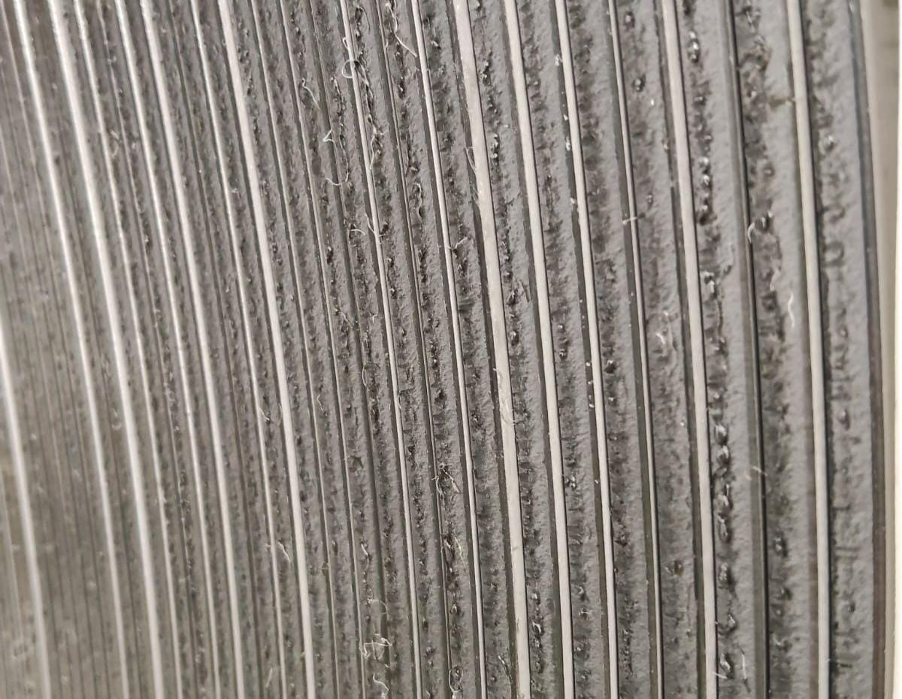

🚨 1. Problema de Calidad - Defecto BUTSU
Defecto Identificado
BUTSU (Rebaba en el Canto)
Defecto en el borde del material de bobina, generado por un corte deficiente.
Material Afectado: Acero de Alta Resistencia, Spec: SAE1541M, Espesor: 3.67mm.
Impacto y Bloqueo de Material
Material en Planta
🔍 2. Causa Raíz: Gestión de Suministro de Cuchillas
Se emite la Orden de Compra (OC) para cuchillas SVH77 (Alta resistencia) (Vida Útil calculada hasta: Agosto 2025).
Inicio de Contratiempos en Llegada de Suministro (Cuchillas de alta resistencia), lo que deriva la necesidad de Extender de la vida útil de las cuchillas instaladas.
Aparición del Defecto BUTSU
Derivado por Trabajar con Cuchillas Cercanas a su Diámetro Final de Vida útil.
Llegada e Instalación de Nuevas Cuchillas (04/11/2025). Corrida Supervisada Resultando en Material Dentro de Especificaciones.
El defecto se originó al extender la vida útil de las cuchillas por un Retraso de 3 meses en la entrega, pasando de 4 a 7 meses en total.
✅ 3. Acciones Correctivas Inmediatas y Permanentes
Acción Inmediata (Contención)
- Se Generó una AYUDA VISUAL para identificar el defecto especifico y gestionar su contensión.
- Se Generó HOJA DE OPERACIÓN para realizar el retrabajo de manera correcta cuidando mantener los criterios de aceptación del material.
Acción Permanente (Stock de Seguridad)
Las nuevas cuchillas tienen una vida útil de 5 años.
Para prevenir una recurrencia, se Presupuesto la compra de un segundo juego de cuchillas para establecer un Stock de Seguridad llegada en 2026.
Esto asegura la continuidad operativa, incluso ante retrasos imprevistos de más de 6 meses.
💡 4. Mejora del Proceso y Control de Calidad
Control de Claros y Cuchillas
- Se implementa un formato de registro para documentar los claros, el juego de cuchillas y las gomas utilizadas en cada armado. Esto permitirá construir un historial confiable y detectar variaciones que generen rebaba (butsu).
- Se actualizan las hojas de operación para incluir criterios de detección temprana del defecto butsu, facilitando la intervención inmediata cuando el proceso muestre desviaciones.
Refuerzo Técnico Línea Kyowa Slitter
Se implementa capacitación para operadores y personal de calidad, enfocado en el reconocimiento del defecto butsu y en las acciones de corrección asociadas.
Se analiza la adquisición de un gauge especializado para medir redondez y planicidad de las cuchillas, asegurando su condición antes de usarse en producción.